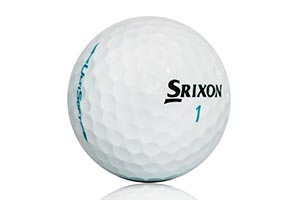
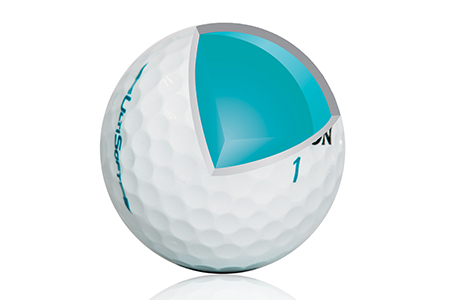
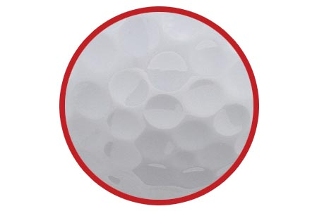

ULTISOFT SOFT WHITE
UltiSoft is true to its name as the ultimate golf ball for softness and feel. It’s the lowest compression ball in our lineup, delivering unmatched performance on every strike.
TECHNOLOGY
Fastlayer core
With a soft center that gradually transitions to a firm outer edge, the FastLayer Core gives UltiSoft incredible softness and great distance off the tee.
338 Speed Dimple Pattern
To get more distance overall and better performance in the wind, Speed Dimples reduce drag at launch and increase lift during descent.
Soft, Thin Cover
Provides more greenside spin and softer feel on all pitches, chips and putts.
Srixon Ultisoft Specs
| CONSTRUCTION | 2pc |
| COVER MATERIAL | Ionomer |
| COVER THICKNESS | 1.45 mm |
| COMPRESSION | 42 |
| DIMPLES | 338 |
SRIXON Ultisoft PRICE
22.99 € / 32.99 CHF / 299 SEK / 24 £